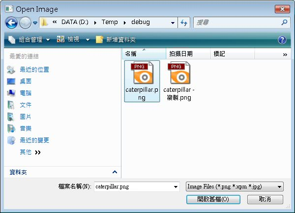
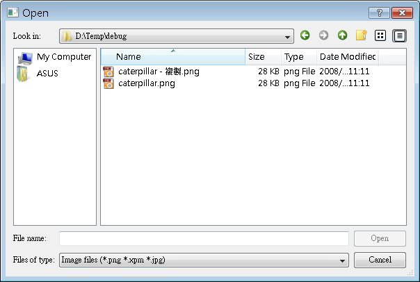

在視窗程式中開啟檔案或另存檔案的動作，會使用檔案對話方塊來讓使用者方便的選取或決定檔案名稱，在Qt中，這則是由QFileDialog類別負責，在這邊將示範一些簡單的使用方式。
QFileDialog最簡單的使用方法就是利用它所提供的靜態方法，例如下面這個程式會顯示一個開啟檔案的對話方塊，選取檔案後顯示所選取的檔案路徑與名稱：
#include <QApplication>
#include <QWidget>
#include <QLabel>
#include <QFileDialog>
int main(int argc, char *argv[]) {
QApplication app(argc, argv);
QLabel *label = new QLabel("<center>FileDialog</center>");
label->setWindowTitle("FileDialog");
label->resize(500, 100);
label->setFont(QFont( "Times", 18, QFont::Bold ));
label->show();
QString fileName = QFileDialog::getOpenFileName(label, "Open Image",
"C:\\", "Image Files (*.png *.xpm *.jpg)");
if(fileName != NULL) {
label->setText("<center>" + fileName + "</center>");
}
return app.exec();
}getOpenFileName()方法會顯示一個檔案開啟的對話方塊，如果要顯示儲存檔案的對話方塊，就使用getSaveFileName()方法， 在參數的指定上，"C:\\"指定開啟時的工作目錄，而"Image files (*.png *.xpm *.jpg)"指定開啟檔案時的副檔名過濾，如果還要使用其它的過濾方式，可以使用分號，如下所示：
"Image files (*.png *.xpm *.jpg);;Text files (*.txt);;XML files (*.xml)"
下圖為Qt的檔案對話方塊執行畫面：

也可以新增物件的方式來使用QFileDialog類別，這可以設定更多的選項，下面這個程式示範一些常用的方法：
#include <QApplication>
#include <QWidget>
#include <QLabel>
#include <QFileDialog>
int main(int argc, char *argv[]) {
QApplication app(argc, argv);
QLabel *label = new QLabel("<center>FileDialog</center>");
label->setWindowTitle("FileDialog");
label->resize(500, 100);
label->setFont(QFont( "Times", 18, QFont::Bold ));
label->show();
QFileDialog* dialog = new QFileDialog(label);
dialog->setDirectory("C:\\"); // 設定開始目錄
dialog->setFileMode(QFileDialog::ExistingFile); // 可選取已存在的檔案
dialog->setFilter("Image files (*.png *.xpm *.jpg)"); // 副檔名過濾
dialog->setViewMode(QFileDialog::Detail); // 顯示詳細資訊
if (dialog->exec() == QDialog::Accepted) {
QStringList fileNames = dialog->selectedFiles();
QStringListIterator iterator(fileNames);
while(iterator.hasNext()) {
label->setText("<center>" + iterator.next() + "</center>");
}
}
return app.exec();
}setDirectory()設定對話方塊第一個顯示的目 錄，setFileMode()設定使用者可以選擇的檔案類型，ExistingFile表示可選取已存在的檔案，AnyFile則表示您可以選擇任何檔 案，即使檔案不存在（像是在另存新檔時指定一個新的檔名時使用），Directory表示可以選取目錄，DirectoryOnly表示只可以選取目錄， ExistingFiles表示可以進行檔案多選。
setFilter()即使設定檔名過濾，setViewMode()用來設定檢視的細節，Details顯示詳細資訊，而List則只顯示檔名與圖示，selectedFiles()會傳回所選取的檔案清單，以QStringList傳回（繼承自QList），程式中使用的是Java風格的迭代方式，您也可以使用索引風格：
QStringList fileNames = dialog->selectedFiles();
for (int i = 0; i < fileNames.size(); i++) {
label->setText("<center>" + fileNames.at(i) + "</center>");
}
for (int i = 0; i < fileNames.size(); i++) {
label->setText("<center>" + fileNames.at(i) + "</center>");
}
或STL風格的迭代器：
QStringList fileNames = dialog->selectedFiles();
QStringList::const_iterator iterator;
for (iterator = fileNames.constBegin(); iterator != fileNames.constEnd();
iterator++) {
label->setText("<center>" + (*iterator) + "</center>");
}
QStringList::const_iterator iterator;
for (iterator = fileNames.constBegin(); iterator != fileNames.constEnd();
iterator++) {
label->setText("<center>" + (*iterator) + "</center>");
}
下圖為程式執行時的一個畫面：
